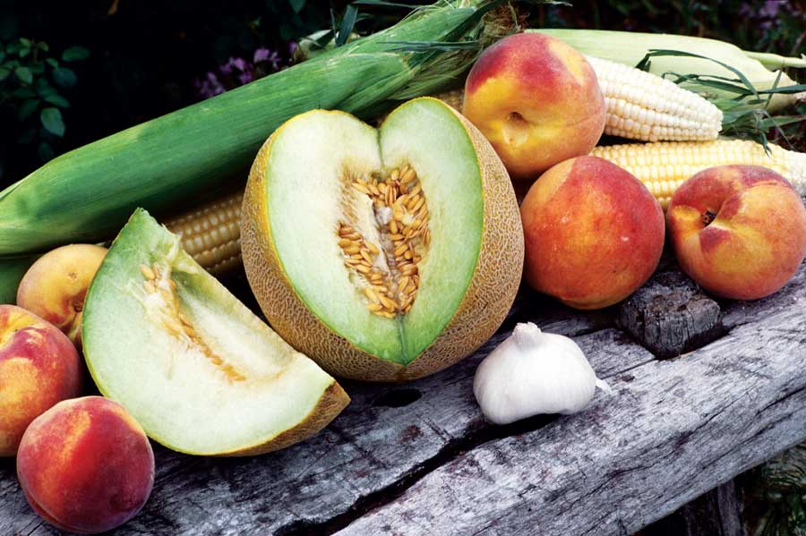

The sweetest rewards of any garden are its melons, and the Seed Savers Exchange and its members are currently maintaining more than 400 varieties of melons.
Honeydew, shown above, certainly ranks as an esteemed dessert fruit, though in France it was once the custom to eat melons before the meal. Cultivated since antiquity, melons originated in Persia and were first recorded being grown in Egypt about 2400 B.C. Brought to the New World during the 16th century, our present varieties may not date back that far, but the delicious characteristics that we enjoy today were also found in ancient melons.
HONEYDEW MELON WITH TOASTED PEANUTS AND SOUTHEAST ASIAN HERBS
Ingredients:
1 1/2 quarts honeydew melon, peeled, cored and cut into bite-size pieces
1 red bell pepper, roasted and diced
Vinaigrette:
1/3 cup water
1 tbsp honey
2 tbsp rice vinegar
1/8 tsp red chili flakes
1 tsp minced fresh ginger
1 tsp coriander seed
1 pod star anise
1/4 tsp kosher salt
2 1/2 tbsp fresh squeezed lime juice
2 tsp dark sesame oil
Toppings:
2 tbsp fresh chopped mint
2 tbsp fresh chopped cilantro
2 tbsp fresh chopped Thai basil
1/4 cup toasted cracked peanuts
Instructions:
In a saucepan, combine water, honey, rice vinegar, chili, ginger and spices. Simmer to a third of original volume (approximately 3 tbsp), remove from heat and let cool. Whisk in lime juice followed by sesame oil. In a serving bowl, combine diced melon, roasted pepper and vinaigrette. Toss with fresh herbs. Sprinkle with peanuts and serve immediately.
|
 ROSALIND CREASY Honeydew melons make for a delectable dessert straight from the garden. |
|
|